Mihai at Devil's Lake, WI

July 2002
On Bastille Day, I went with a group of friend to Devil's Lake, WI, for a picnic. It was a quite nice walk in the park. I borrowed the map below from the Wisconsin Department of Natural Resources website, to help me illustrate our walks out and about the lake. Click on the image to get a higher resolution map.
{kind=link}
The Photos
Click the thumbnails to see the larger images. Each image is about 100 kB, in JPEG format, with a resolution of 1024x706 for landscapes, and symmetrically similar for portraits.
| 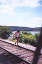
Photo # 01
Ina hopping on the railroad running along the East side of the lake, on our way to the North beach. | 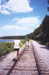
Photo # 02
On the way to the North beach, walking along the railroad East of the lake: Ina and Irene | 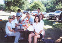
Photo # 03
At a picnic table on the South beach: Irene, Maleeha's grandfather, Maleeha, Stephen, Danielle, Ina, Kyle, and Mihai. |
| 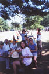
Photo # 04
At a picnic table on the South beach: Irene, Maleeha's grandfather, Maleeha, Ina, Stephen, Danielle, Ning, and Kyle. | 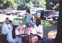
Photo # 05
At a picnic table on the South beach: Irene, Maleeha's grandfather, Maleeha, Danielle, Stephen, Ning, and Ina. | 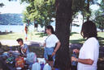
Photo # 06
At a picnic table on the South beach: Irene, Maleeha, and Ina. |
| 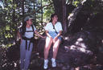
Photo # 07
On the way to the top of the East Bluff, on the Potholes Trail: Irene, Maleeha. |
{kind=link}
{kind=link}
{kind=link}
{kind=link}
{kind=link}
{kind=link}
{kind=link}
More Photos
The photos above were taken my me using a simple point-and-shoot camera. Ning charmingly made available to everyone her digital photos of the trip. I posted them along with my notes on this page.
The Story
| 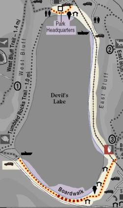 |
As soon as we got to the lake, confusion started. We split into three groups, one went to park the car, the other two went separate ways, but meaning to meet at the North shore. Ina, Irene, and I followed the East shore railroad for 45 grueling minutes under the scorching sun of Wisconsin, only to find no one from our group at the North shore. Everybody else from Wisconsin was there (it was packed!). The whole split idea was bad: none of us had maps, and I was the only one with a cellphone. Kyle left a message on my cellphone, saying he was with the other two groups at the South shore and this baffled us even more. I mean, we were all supposed to meet at the North shore... So Irene, Ina, and I are walking around the North shore, checking people in hope of finding at least part of our group there. Irene spots a car that looks like Kyle, and the long lost sheep are returned to the flock! Kyle was looking for us also. Happy ending: we met with the rest of the group and had our lunch! |
|
After some lunch, some kidding around, and some photos, we took to the bluffs! We went on the Grottos trail for a while, then followed the Potholes trail to the top of the bluff. | 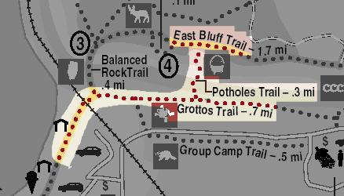 |
| 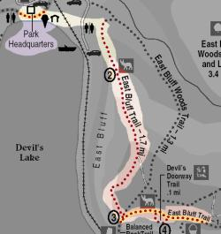 |
The walk on the East Bluff was very interesting, with several spectacular views of the lake and the various rock formations that adorn the landscape. Rock-climbers were all over the place! The East Bluff trail is quite popular, so do not expect to be all alone in the wilderness. Maybe it's because the trail is paved (like a sidewalk!!), but a lot of people, of varying degrees of preparedness, went along. |
|
We hung out at the "Chateau" located on the Northern shore. After a lot of discussion (nobody wanted to go get the car), a small group went and brought the cars from the South end parking lot. | 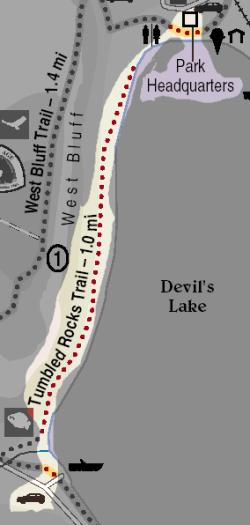 |
We went to Parfrey's Glen, on the East section of the park (not shown on the above maps). It's quite a unique view, a humid, dark gulley on the flats of Wisconsin.
On the way back to Madison, we took the Merrimac ferry over the Wisconsin river. At the loading "dock", an icecream shop was conveniently located for travelers waiting for the ferry. We did not need a second invitation :-)
We finally made it home by 9:30 PM, some muddy, some happy, some muddy and happy!